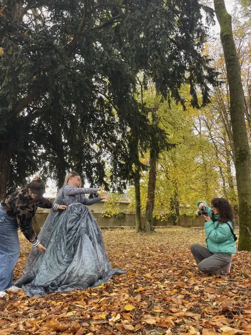

« Écrire le mouvement » — Fondation Bompard
Dans le cadre de la Biennale Koltès #8, Quai Est a confié à Epine Bazaar et à la comédienne et autrice Suzie Colin une immersion artistique à la Fondation Bompard (handicap et grand âge en Moselle). Sept participant·es y ont mêlé écriture, pratique théâtrale, photographie et confection de costumes pour incarner un personnage et construire leur propre univers visuel, à partir de leurs passions, de leur vécu et de leur imaginaire.
Epine Bazaar réunit Elisa Rodriguez, costumière, et Léna Vaillant, photographe, autour de stages artistiques accessibles et inclusifs qui placent les récits des personnes au cœur de la création.
En costumes et en portraits, lors du marché de Noël de la Fondation Bompard, en présence des participant·es, des intervenant·es et des résident·es. Fondation Bompard, 25 rue du Château, 57680 Novéant-sur-Moselle.
Avec la participation du personnel de la Fondation Bompard et le soutien de la Fondation Bompard, de la Fondation La Poste, de la Région Grand Est et de la Ville de Metz.
